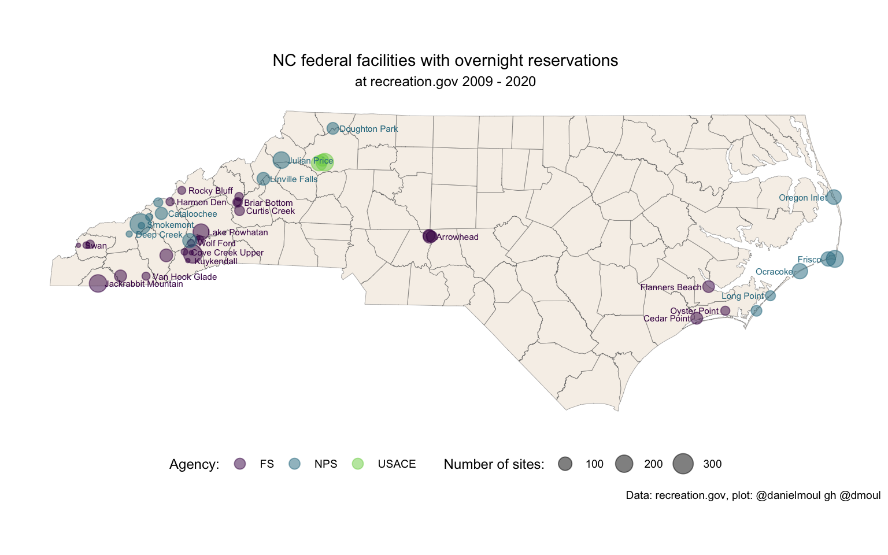
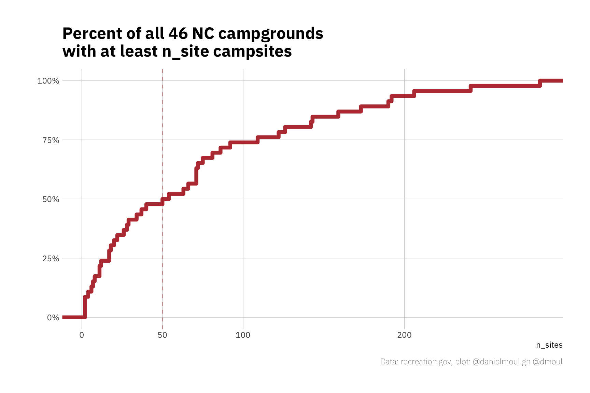

2 Federal parks in North Carolina
2.1 Federally-owned facilities in NC
Following the data, I focus here on federal facilities rather than the NC State Park system. See Appendix Section 7.1 What’s possible given this data set? These federal facilities in NC, amidst the oddities of 2020, provided 785,845 person-nights of camping and collected $3,369,447 in overnight camping fees.
For the sake of brevity, I refer to the facilities as “campgrounds” and “campsites” even though some are cabins, lodges, lookouts, and shelters.
There are 46 federal facilities in North Carolina offering reservations through recreation.gov, which I consolidated from 56 separate facility_id values (some parks identify cabins or group campgrounds with separate facility ids).
A summary table can be found in Appendix Section 7.2.1 NC facility summary
2.2 Federal agencies and their camping facilities
The following federal agencies offer overnight camping with reservations via recreation.gov:
| Federal agencies offering overnight camping reservations in NC via recreation.gov |
|||
| org_name | n_facilities | org_abb | org_url |
|---|---|---|---|
| USDA Forest Service | 31 | FS | http://www.fs.fed.us |
| National Park Service | 22 | NPS | http://www.nps.gov |
| US Army Corps of Engineers | 3 | USACE | http://www.usace.army.mil |
2.3 Campground locations
Campgrounds are nearly all in the mountains in the West or at coast in the East.

2.4 Campsites per campground
About half the campgrounds have at least 50 campsites:
